模组只是起点
临时起意的牌局、一次绕路、一个新的疑问，都可能把故事带向原作之外。
Ph'nglui mglw'nafh Cthulhu R'lyeh wgah'nagl fhtagn.
《克苏鲁的呼唤》第 7 版 · AI 守秘人
由 AI 担任守秘人的中文跑团游戏。用自己的话行动、交谈和探索，追查藏在日常生活中的异常。独自调查、带上 AI 同伴，或邀朋友加入同一场故事。
早班火车驶入阿诺兹堡。委托人住在小镇尽头的公墓旁，你可以先问路、吃一顿早饭，或者去图书馆翻旧报纸。写下你想做的事，守秘人就会回应你的行动，并在需要时请你掷骰。
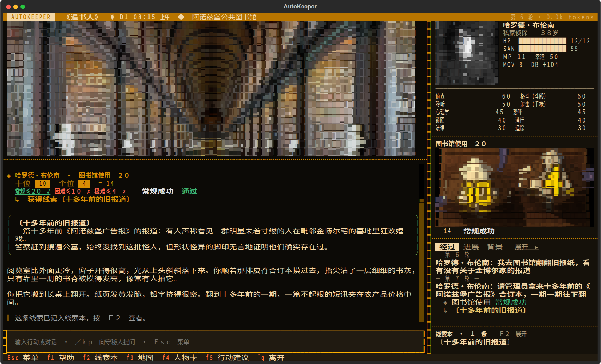
临时起意的牌局、一次绕路、一个新的疑问，都可能把故事带向原作之外。
一次承诺、一件转交的物品、一扇被撞开的门，都可能影响后来的故事。
NPC 有各自的动机、秘密和牵挂。他们会帮忙、隐瞒或撒谎，也可能被你说服、打动。
亲手掷出十面骰，面对成功与失败。幸运、理智、伤势与弹药，都会影响你的选择。
真彩字符画呈现人物与场景，实时配乐随气氛变化，让日常、悬疑和恐怖各有声音。
导入你想玩的模组，或从一句设定开始，让 AI 准备一场原创调查。
开一间服务器房，把房间号发给朋友，就能在终端同桌。你们可以结伴行动，也可以分头探访不同地点，各自带回新的见闻。

每个人看到自己的现场，收到自己的私信和手稿，再决定把哪些发现告诉队友。也可以让一位朋友担任 KP，由他决定谁听见门后的声音，或和 AI 私下商量下一幕。
照片与插图化作真彩字符画，天色、雨雪和雾气随场景变化。你可以在块字符、点阵、速写和纯 ASCII 等画风之间切换，选择自己喜欢的样子。
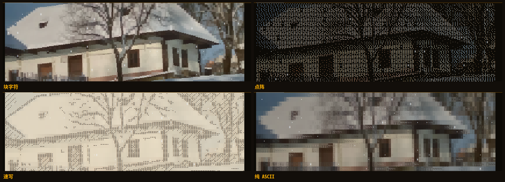
人物到来、线索显现、危机发生，画面也会留下变化。开启 AI 绘图后，还能为场景生成新的画面与细节特写。
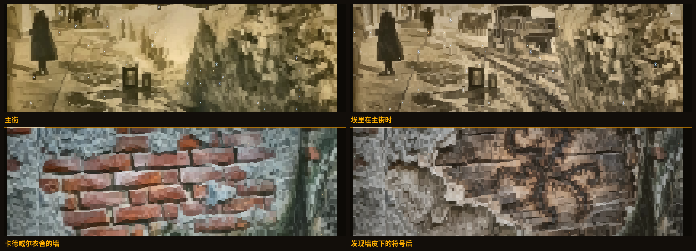


翻阅信件、日记和剪报，把人物、地点、手稿和自己的笔记放在线索板上。拖动、连线、批注，整理你对这场调查的理解，也可以把材料和笔记分享给队友。

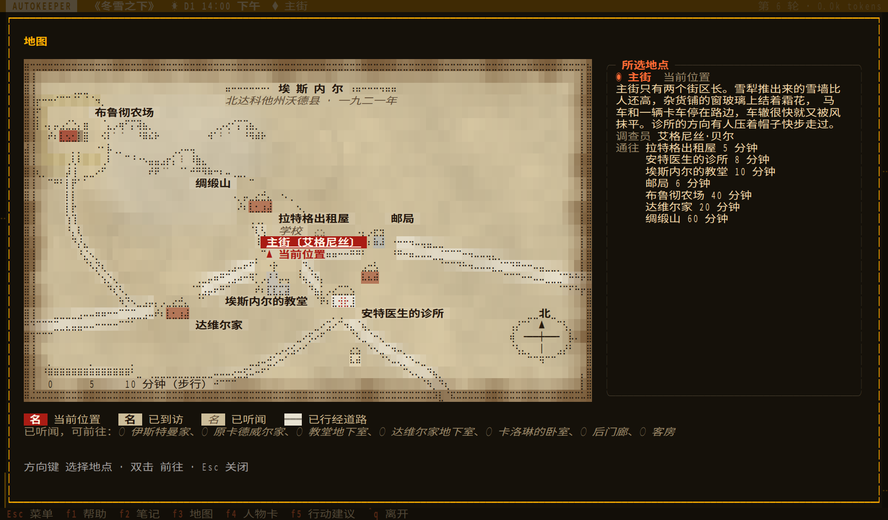
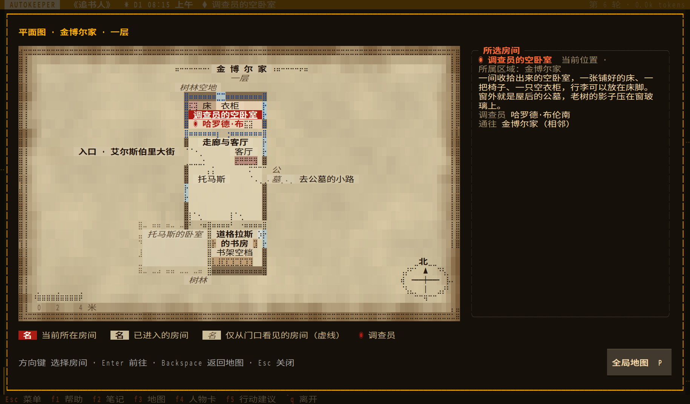
调查时的钢琴与拨弦、危险逼近时的低沉吟唱、追逐中的铜管，都随故事的气氛变化。配乐在游玩中实时生成，每局有自己的主题，在终端和浏览器中都能听见。
钢琴与拨弦伴随调查展开。
低沉吟唱中，不安逐渐逼近。
铜管领奏，追逐开始。
亲手掷出十面骰，面对成功与失败。你可以在规则允许时花费幸运，或换一种做法孤注一掷；战斗、追逐、理智损失与疯狂，都有各自的代价。游戏以《克苏鲁的呼唤》第 7 版为基础，也提供绿色三角洲规则包，支持为自己的团加入家规。
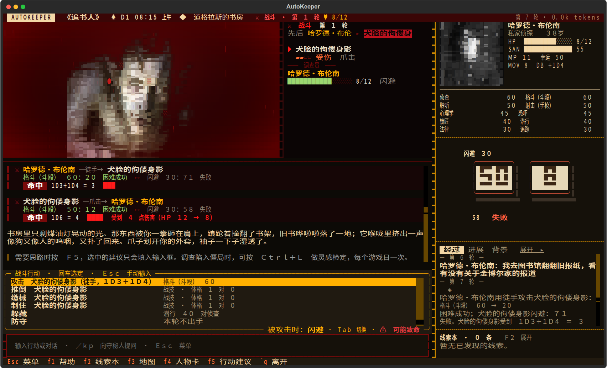

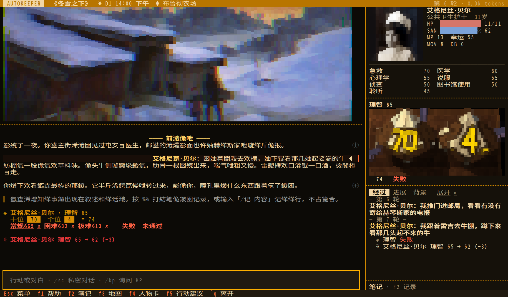

挑选下一场调查。进入游戏后，在「导入模组 → 模组库」下载。


2008 年（现代）
2008 年 2 月 15 日午夜，绿色三角洲的联络人敲开你家的门，交给你一份名为“停机行动”的任务：你的老队友亚当森·考克斯精神崩溃，请求组织“处理”他，并指名由你来完成。
查看详情
1920 年代
明天就要考试了。你们的同学、数学系最有前途的学生之一詹姆斯·布莱恩特，在考前最后一堂课上没有出现。 詹姆斯痴迷数学，不善交际，却是可靠、忠实、值得信赖的朋友。他很少谈自己，唯一提起过的“家人”是住在佛蒙特州的科拉阿姨。
查看详情
1939 年 2 月（纳粹德国）
1939 年 2 月 11 日，阴雨。你是帝国保安处负责国内安全的人员，从柏林被派到埃森。德国军方的武器供应商赫施伯格钢铁厂的董事长阿克塞尔·冯·赫施伯格刚刚去世，按遗嘱由大儿子沃德蒙特继承家业。
查看详情

2009 年夏（原作融合 00 年代与 10 年代的时代风貌）
2009 年 8 月 7 日，一个闷热的夏天。你们约好在废弃的海洋乐园交换小浣熊卡片、互抄暑假作业，可一向准时的阮施宁一直没来。下午一点，你们决定自己去找她。
查看详情没有找到符合条件的模组。
使用备用源下载。将 bayu 换成模组详情页上的安装名称。
autokeeper library get bayu --server https://gh-proxy.com/https://raw.githubusercontent.com/satoshinji2992/autokeeper/mod_library/catalog/mirror游戏另附《追书人》《冬雪之下》《有些人油盐不进》，可直接从「新的调查」开始。
选择预设调查员，或从自己的设想开始建卡。AI 可以协助你准备背景、肖像、属性和技能；你也可以手动分配点数，导入已有的人物卡。
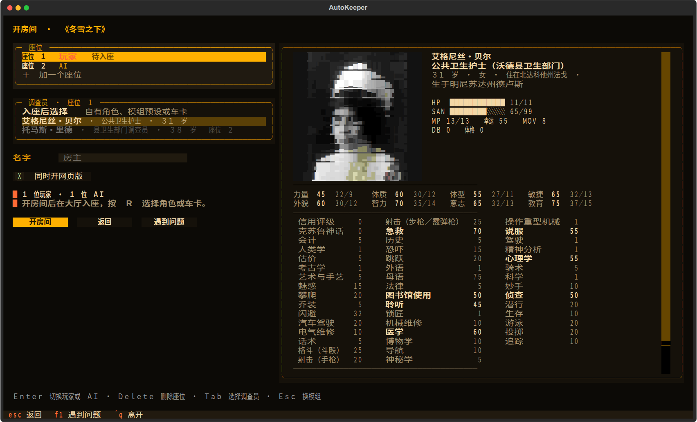
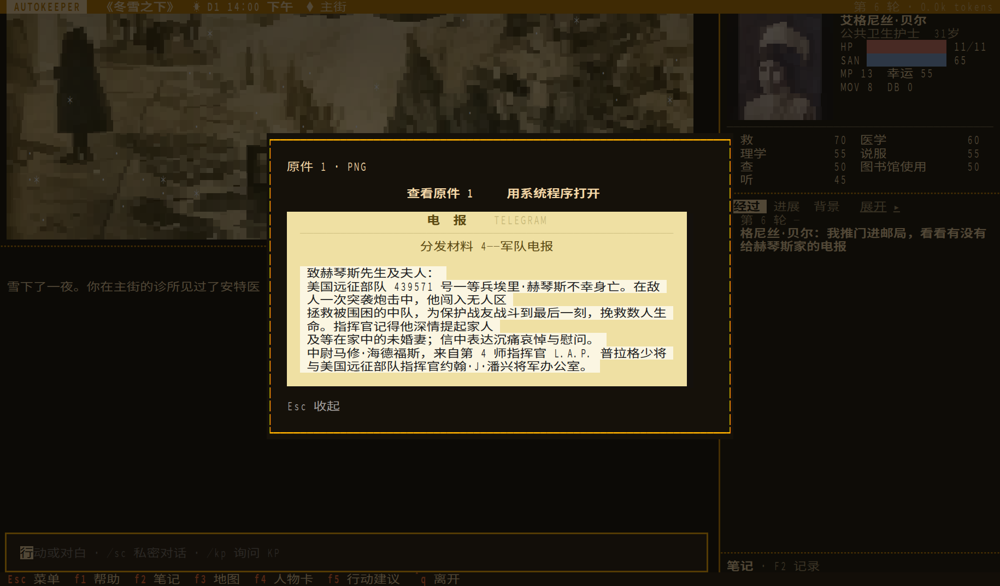

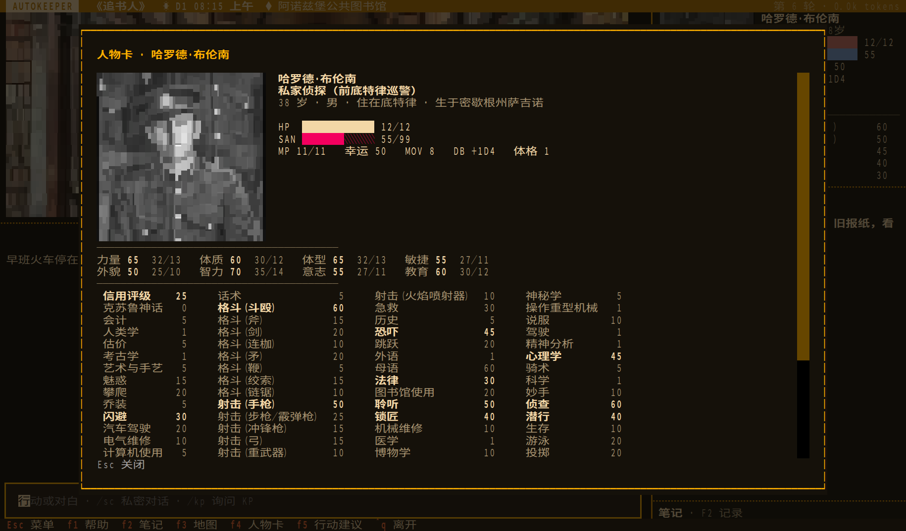

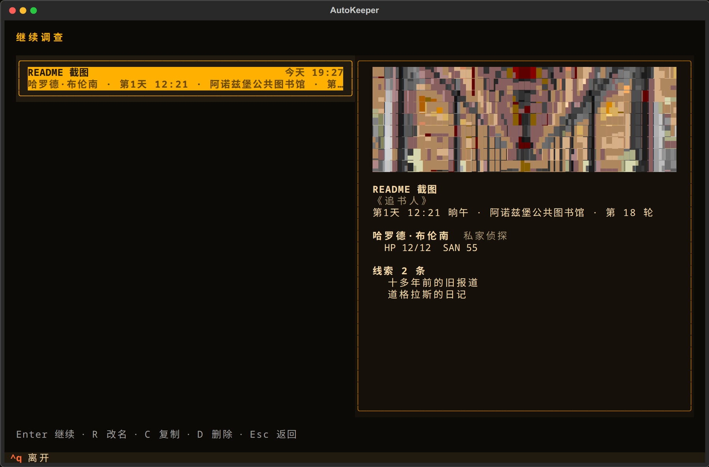
每回合自动存档，随时继续调查。结束后，可以重看整局经过，切换调查员视角，看看队友当时经历了什么。回放无需连接模型。
支持 Windows x64 和 Linux x86_64（不支持 mac 系统）。
优先从官方 PyPI 下载游戏和依赖；超时后才用清华镜像重试。Linux 和 WSL 请先准备 Node.js 22+ 和 npm，Windows 脚本会检查并安装 Node.js。
# Linux、WSLcurl -fsSL https://satoshinji2992.github.io/autokeeper/install.sh | bash
# Windows PowerShellirm https://satoshinji2992.github.io/autokeeper/install.ps1 | iex
uv tool install --python 3.12 --default-index https://pypi.org/simple autokeeper
autokeeper setup官方源超时才改用 https://pypi.tuna.tsinghua.edu.cn/simple。镜像可能还没有最新版本。
autokeeper，选择模型并填写密钥。uv tool uninstall autokeeper在原来安装的终端执行，存档、角色卡和设置会保留。通过 pipx 安装时使用 pipx uninstall autokeeper。
支持 DeepSeek、Claude、Codex、Ollama 和 OpenAI 兼容接口。朋友加入房间只需浏览器，无需单独配置模型。安装与游玩帮助见游玩指南。